This document describes the REST API endpoints provided by the web server for cryptocurrency wallet operations, trading activities, and market data retrieval. The API serves the frontend applications and enables management of trading orders, technical analysis, and financial reporting.
For information about the underlying web server infrastructure and middleware, see Web Server and Error Handling. For details about external service integrations that provide market data, see External Service Integrations.
All API endpoints in the system follow a consistent POST-based architecture with standardized request and response formats. The endpoints are defined in the Hono web server and use dependency injection to access underlying services.

All endpoints accept POST requests with a standardized JSON payload containing:
| Field | Type | Description |
|---|---|---|
requestId |
string | Unique identifier for request tracking |
serviceName |
string | Name of the calling service |
pagination |
object | Pagination parameters (for list endpoints) |
filterData |
object | Filter criteria (for list endpoints) |
| Additional fields | varies | Endpoint-specific data |
All endpoints return a consistent JSON response format:
| Field | Type | Description |
|---|---|---|
data |
object/array | The actual response data |
status |
string | "ok" or "error" |
error |
string | Error message (empty if status is "ok") |
requestId |
string | Echo of the request ID |
serviceName |
string | Echo of the service name |
These endpoints handle the creation, modification, and lifecycle management of trading orders.

Endpoint: POST /crypto-wallet/order/create
Creates a new trading order with validation for price, quantity, and timestamp fields.
Request Interface:
CreateRequest with symbol and data fieldsBinanceServiceKey Operations:
price, quantity, timestampbinanceService.formatPrice()binanceService.formatQuantity()orderOpenDbService.create()Endpoint: POST /crypto-wallet/order/edit/:id
Updates an existing order with new price, quantity, or comment information.
Process Flow:
orderOpenDbService.findById()orderOpenDbService.update()Endpoint: POST /crypto-wallet/action/commit_close
Closes an open order by creating a close record and marking the original order as ignored.
Close Process:
(closePrice - originalPrice) * quantityOrderClose record via orderCloseDbService.create()ignore: true and orderCloseIdThe commitClose function demonstrates the two-phase close operation:
These endpoints provide access to market data, technical indicators, and trading analysis information.
Endpoint: POST /crypto-wallet/trade_info
Returns comprehensive trading information including technical indicators, order statistics, and financial metrics.
Data Sources:
shortRangeMathService.getEMA()swingRangeMathService.getMACD()longRangeMathService.getRSI()volumeDataMathService.getSMA()The getTradeInfo function aggregates multiple data sources:
Four separate endpoints provide detailed technical analysis reports:
| Endpoint | Service | Indicator Type |
|---|---|---|
/crypto-wallet/status/short |
shortRangeMathService |
EMA (Exponential Moving Average) |
/crypto-wallet/status/swing |
swingRangeMathService |
MACD (Moving Average Convergence Divergence) |
/crypto-wallet/status/long |
longRangeMathService |
RSI (Relative Strength Index) |
/crypto-wallet/status/volume |
volumeDataMathService |
SMA (Simple Moving Average) |
Each endpoint follows the same pattern:
StatusRequest with symbol parameterEndpoint: POST /crypto-wallet/candles/range
Retrieves candlestick chart data for a specified time range and interval.
Parameters:
startDate / endDate: Date range for data retrievalinterval: Binance API interval typesymbol: Trading pair symbolImplementation:
dayjs for date parsing and conversionbinanceService.getChartCandles() with date range and intervalThese endpoints provide access to closed orders, hidden orders, and generate various types of reports.

Revert Closed Order: POST /crypto-wallet/order_close/revert/:id
Reopens a previously closed order by:
ignore: false and clearing orderCloseIdignore: trueThis implements a two-phase reversal operation ensuring data consistency.
Order Report: POST /crypto-wallet/report/order/one/:id
Generates a markdown-formatted report for a single order using OrderOpenDbService.generateOrderReport().
Order History Report: POST /crypto-wallet/report/history
Generates a comprehensive markdown table of order history for a symbol using OrderOpenDbService.generateOrderHistoryReport().
The report generation methods in OrderOpenDbService demonstrate markdown formatting:
All endpoints implement consistent error handling with:
pinolog loggerconsole.time()/console.timeEnd()Error Response Pattern:
{
"status": "error",
"error": "Error message string",
"requestId": "original-request-id",
"serviceName": "original-service-name"
}
The error handling uses functools-kit utilities for error processing:
errorData(): Extracts structured error informationgetErrorMessage(): Formats user-friendly error messages